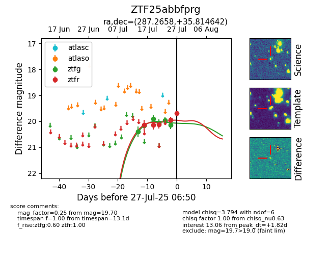

Target ZTF25abbfprg at 2025-07-27 06:50, see:
FINK: fink-portal.org/ZTF25abbfprg
Lasair: lasair-ztf.lsst.ac.uk/objects/ZTF25abbfprg
ALeRCE: alerce.online/object/ZTF25abbfprg
alt names
ZTF25abbfprg (ztf,fink)
coordinates:
equatorial (ra, dec) = (287.2658,+35.81464)
galactic (l, b) = (67.1188,+12.20315)
photometry
last ztfg=20.14, ztfr=19.70
6 ztfg, 5 ztfr detections
